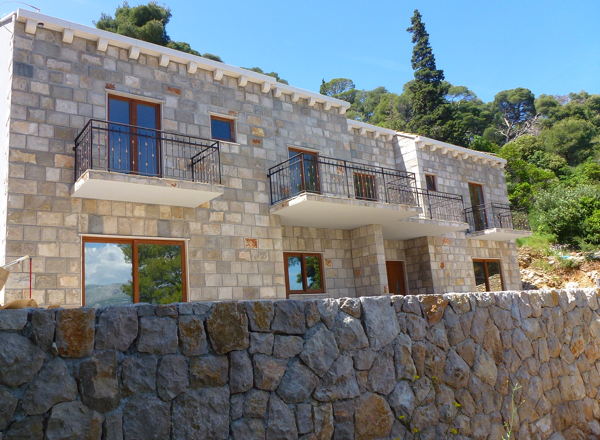
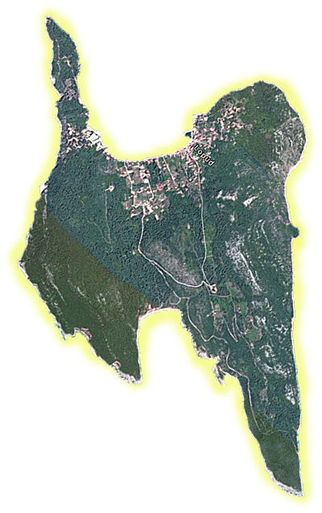

Lopud is a small island in the Adriatic sea a few miles north west of Dubrovnik. The island can only be reached by boat and there are no cars.


Lopud Villas.com
Lopud is a small island in the Adriatic sea a few miles north west of Dubrovnik. The island can only be reached by boat and there are no cars.